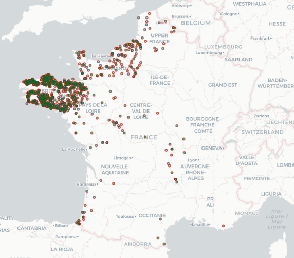

4 Gestion des doublons éventuels RSA/ASPE
Il existe potentiellement des doublons de saisie d’opérations de pêches dans RSA et ASPE. Un doublon est défini comme : une opération de pêche présente à la fois dans ASPE et RSA ayant les champs suivants en commun : - station - date de pêche - quantité totale d’anguilles pêchées
La recherche de doublons se déroule en plusieurs étapes.
La première étape est de remonter les couples de stations ASPE/RSA situées à moins de 200m. Cette étape est réalisée dans le fichier check_dup_stations_ASPE_RSA.R. Les résultats seront stockés dans une table temporaire dans la base Postgres. La connexino à la base est donc initialisée.
source("common/init.r")
# Set up database connection
con = dbConnect(Postgres(),
dbname=baseODBCrios[1],
host="localhost",
port=5432,
user=baseODBCrios[2],
password=baseODBCrios[3])Ensuite l’ensemble des stations ASPE et RSA sont chargées en mémoire.
#get all stations
#RSA
ds_stations_rsa <- dbGetQuery(con, "select * from france.dbeel_station_rsa;")
#transform pg_geometry column to a sf compatible
ds_stations_rsa$sf_geometry <- st_as_sfc(ds_stations_rsa[]$the_geom, EWKB = TRUE)
sf_stations_rsa_3035 <- st_as_sf(ds_stations_rsa,crs=3035)
sf_stations_rsa_3035$the_geom <- NULL
# mapview::mapview(sf_stations_rsa_3035, color="blue",alpha.regions = 0.1, aplha = 0.1,legend=FALSE,cex =1)
#all stations are within french territory
ds_stations_aspe <- dbGetQuery(con, "select * from france.dbeel_station_aspe;")
#transform pg_geometry column to a sf compatible
ds_stations_aspe$sf_geometry <- st_as_sfc(ds_stations_aspe[]$the_geom, EWKB = TRUE)
sf_stations_aspe_3035 <- st_as_sf(ds_stations_aspe,crs=3035)
sf_stations_aspe_3035$the_geom <- NULL
# mapview::mapview(sf_stations_aspe_3035, color="blue",alpha.regions = 0.1, aplha = 0.1,legend=FALSE,cex =1)On calcule après la distance entre tous les couples de stations possibles.
dist <- as.data.frame(st_distance(sf_stations_aspe_3035, sf_stations_rsa_3035, by_element=FALSE))
dist$aspe <- rownames(dist)
#line = stations ASPE
#column = stations RSAOn ne conserve que les couples de stations dont la distance est inférieure ou égale à 200m.
#remove all distances > maxdist
maxdist <- 200 #in meters
#reformat dataset
dist2 <- dist %>%
pivot_longer(cols = !aspe, names_to = "rsa", values_to = "dist")
dist2$dist <- as.integer(dist2$dist)
dist2 <- dist2 %>%
filter(dist <= maxdist) %>%
mutate(across(rsa, substr, 2, nchar(rsa)))On récupère enfin quelques informations supplémentaires sur ces couples de stations, pour notamment vérifier (manuellement) que leur libellés sont similaires. Puis on projette ces résultats sur une carte de France (points rouges = ASPE, points verts = RSA).
#retrieve aspe station informations
dist2$aspe_loc <- sf_stations_aspe_3035[dist2$aspe,]$op_placename
dist2$aspe_sta_id <- sf_stations_aspe_3035[dist2$aspe,]$sta_id
#retrieve rsa station informations
dist2$rsa_loc <- sf_stations_rsa_3035[dist2$rsa,]$op_placename
dist2$rsa_sta_id <- sf_stations_rsa_3035[dist2$rsa,]$sta_id#for rsa, sta_id & sta_zone are needed to uniquely identified a station
dist2$rsa_sta_zone <- sf_stations_rsa_3035[dist2$rsa,]$sta_zone
mapview::mapview(sf_stations_aspe_3035[dist2$aspe,], color="red",alpha.regions = 0.2, aplha = 0.1,legend=FALSE,cex =3) +
mapview::mapview(sf_stations_rsa_3035[dist2$rsa,], color="darkgreen",alpha.regions = 0.2, aplha = 0.3,legend=FALSE,cex =1.5)
#near-by station ar correctly shown on map
Les résultats sont finalement stockés dans la base. La table est préfixée de temp car elle n’a pas vocation à rester en base.# Write result table in the database
#remove index columns
dist2$aspe <- NULL
dist2$rsa <- NULL
DBI::dbExecute(con, "DROP TABLE if exists france.stations_dup_aspe_rsa;")
DBI::dbWriteTable(con, "temp_stations_dup_aspe_rsa", dist2) # written in public scheme
DBI::dbExecute(con, "ALTER TABLE stations_dup_aspe_rsa set schema france")